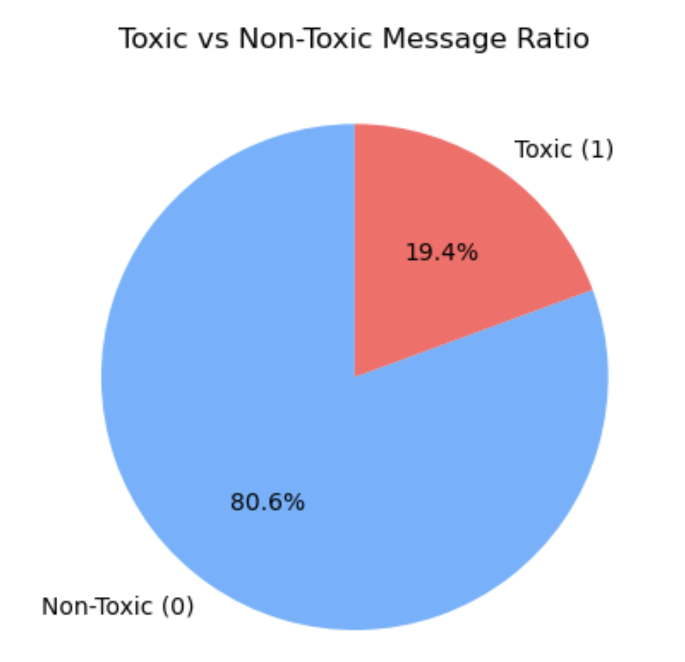
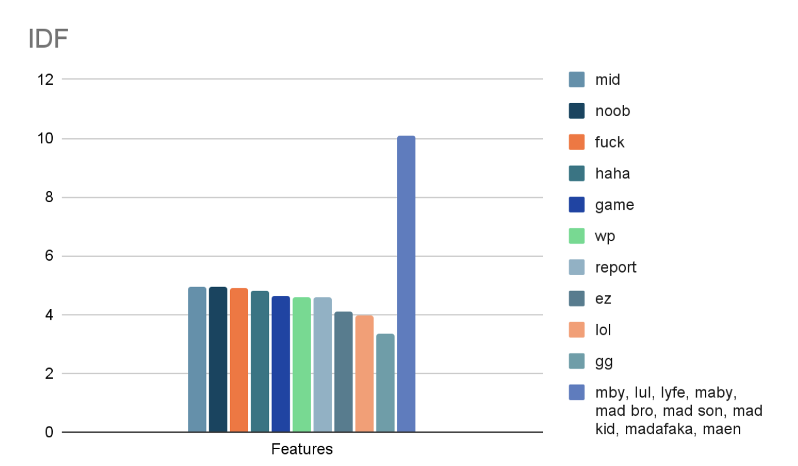
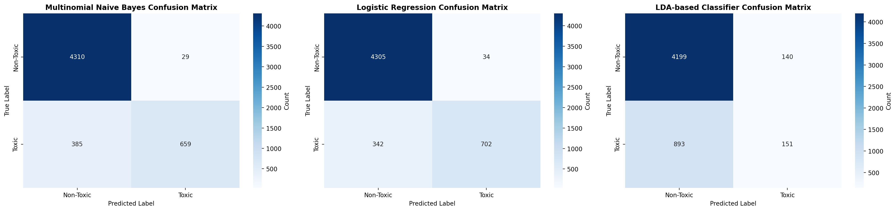
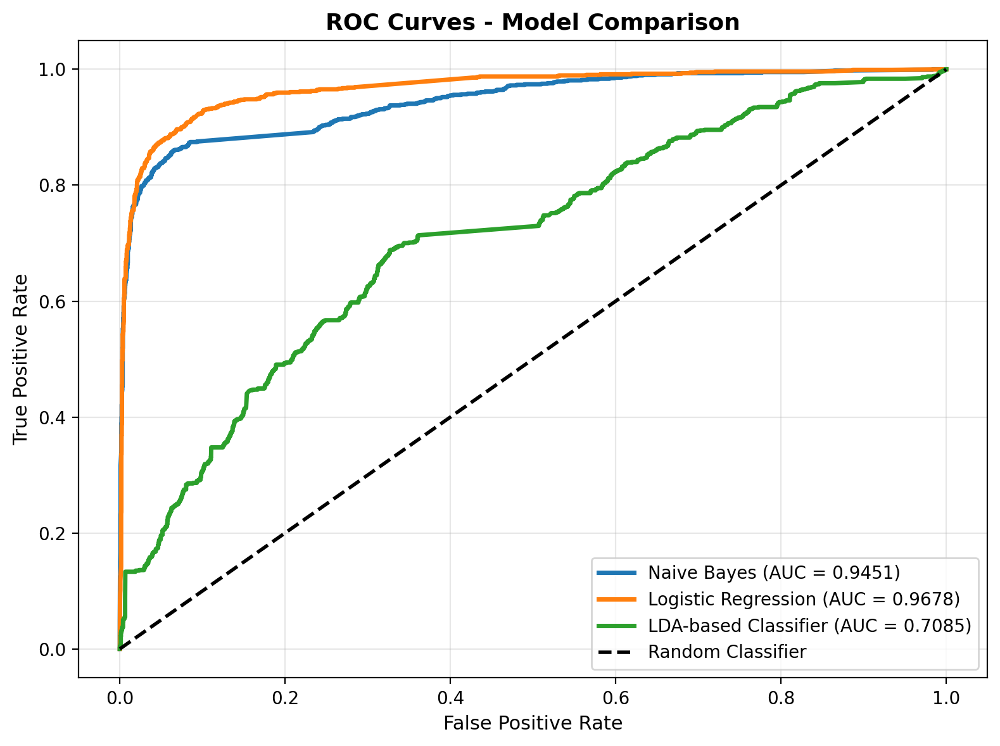
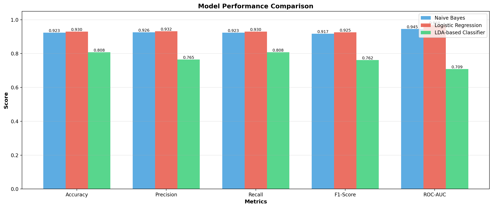
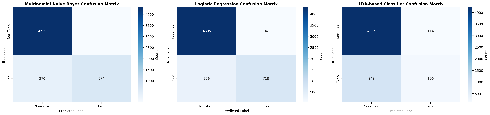
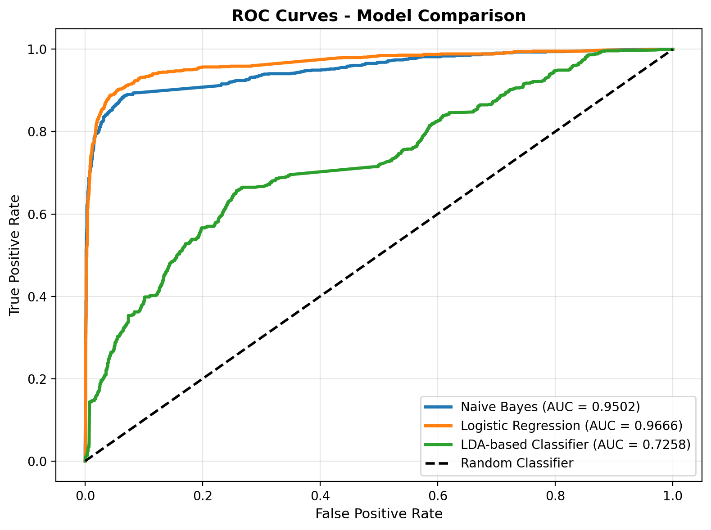
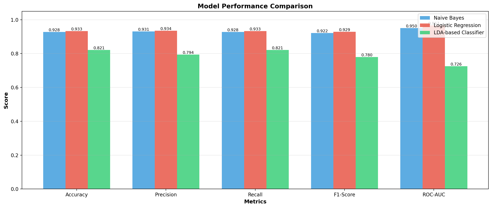

Report
Introduction/Background
Toxic behavior in online games provides a challenge for game developers and moderators. In games such as Dota 2 and League of Legends, in-game chat is the most common source of toxic behavior. Prior studies and papers have shown that supervised models can approximate human judgments of toxicity. We decided to switch datasets and use the CONDA dataset, a CONtextual Dual-Annotated dataset for in-game toxicity understanding and detection [1]. The dataset consists of 45K utterances from 12K conversations extracted from chat logs of 1.9K completed Dota 2 matches. CONDA provides a robust toxicity framework, which handles both utterance-level and token-level patterns, along with rich contextual chatting history by capturing coversationID. This makes it well-suited for supervised learning approaches that require deeper understanding of context beyond single-utterance analysis. Although we are not using the chatting history capability of the dataset yet, it opens the doors to more complex models down the road.
Problem Definition
While online games are intended to foster community, the prevalence of toxic comments in live chats directly undermines this goal. This hostility not only creates an unwelcoming environment but also poses a significant risk to the mental and emotional health of players. The core problem is the lack of an effective, scalable method for identifying toxic behavior from chat logs in real-time, which is essential for enabling moderation and preserving a safe social space for all gamers.
Methods
Data Preprocessing
The preprocessing pipeline converts raw chat logs from the CONDA dataset into a cleaner format designed for our machine learning models. This is a pipeline that transforms the raw data into numerical features ready for model training:
Data Cleaning: Load dataset and remove rows with missing values in essential columns
utterance&intentClass.Binary Label Mapping: CONDA dataset uses four intent classes:
E(Explicit toxic),I(Implicit toxic),A(Acceptable), andO(Other). We mapped these four intent classes to binary labels:EandI=1(toxic) andAandO=0(non-toxic).- Text Cleaning and Normalization:
- Convert all text to lowercase
- Remove
[SEPA]markers - Remove URLs
- Remove user mentions
- Remove non-essential characters (keeping only alphanumeric characters, basic punctuation, and whitespace)
- Normalize whitespace (collapse multiple spaces into single spaces)
- Tokenization, Stopword Removal, and Lemmatization: Used NLTK to apply three key linguistic preprocessing steps:
- Tokenization: Break each message into individual words/tokens using
word_tokenize() - Stopword Removal: Remove common English stopwords (e.g., "the", "a", "is")
- Lemmatization: Reduce words to base dictionary form (e.g., "playing", "played", "plays" -> "play") using
WordNetLemmatizer
- Tokenization: Break each message into individual words/tokens using
- TF-IDF Vectorization: Finally, we convert the cleaned text into numerical feature vectors using Term Frequency-Inverse Document Frequency (TF-IDF) vectorization from scikit-learn. The resulting TF-IDF matrix, including the binary labels, is saved for model training. This preprocessing approach transforms noisy chat data into a format that our ML algorithms can effectively process [2].
Data Preprocessing Discussion
The selection of our preprocessing methods was driven by the specific nature of in-game communication: it is highly informal, prone to typos, and filled with domain-specific slang. Our pipeline was designed to reduce the "curse of dimensionality" inherent in text data while preserving the semantic signals required to detect toxicity.
Rationalizing Binary Classification While the CONDA dataset provides granular classes (Explicit, Implicit, Acceptable, Other), we opted for a binary mapping approach to align with the core problem definition: distinguishing safe environments from unsafe ones. By grouping Explicit and Implicit toxicity into a single positive class, we enable the model to learn the broader characteristics of hostility without being confused by the subtle boundaries between direct insults and sarcastic remarks, which are often difficult even for human annotators to distinguish consistently.
Noise Reduction in Gamer Chat Raw gaming logs are notoriously noisy. We utilized aggressive text cleaning (removal of separating markers, URLs, and user mentions) because these tokens generally act as distinct identifiers rather than semantic indicators of toxicity. For example, a specific URL or a user's handle is rarely intrinsically toxic; retaining them would only increase the sparsity of our feature matrix without adding predictive value. Furthermore, converting to lowercase and removing non-alphanumeric characters ensures that variations of the same slur (e.g., "IDIOT", "idiot", "idiot!!!") are treated as identical features, preventing the model from diluting the weight of these terms across multiple vector dimensions.
Linguistic Normalization The decision to employ Lemmatization over simple Stemming was made to preserve interpretability. While Stemming chops words blindly (often resulting in non-words), Lemmatization uses morphological analysis (via WordNet) to return the actual base word. This is crucial for our TF-IDF approach, as it consolidates the frequency counts of verbs like "griefing," "griefed," and "griefs" into a single, strong signal for "grief." Coupled with stopword removal, this significantly reduces the feature space, allowing our models to focus on high-impact nouns and adjectives rather than common grammatical fillers.
Justification for TF-IDF We selected TF-IDF (Term Frequency-Inverse Document Frequency) over simple Count Vectorization to address the issue of frequent but non-toxic gaming terminology. In Dota 2, words like "mid," "lane," or "push" appear constantly in both toxic and non-toxic contexts. A simple count would weight these words heavily. TF-IDF down-weights these globally common terms and up-weights terms that are unique to specific (likely toxic) utterances. This vectorization strategy creates a high-dimensional but sparse matrix that is particularly well-suited for the Multinomial Naive Bayes classifier we selected for our baseline.
Experimental Feature Sets: Text vs. Temporal Context To evaluate the impact of metadata on toxicity detection, we engineered two distinct dataset variations to feed into our models. Dataset A (Text-Only) consisted exclusively of the TF-IDF vectors derived from the cleaned messages, isolating the linguistic signal. Dataset B (Text + Time) augmented these vectors by appending the gameTime feature (the timestamp of the message within the match). This dual-dataset approach allowed us to test the hypothesis that toxicity in MOBA games is temporally correlated. In other words, we are seeing whether players become statistically more aggressive during late-game high-pressure moments compared to the early game. By training all supervised and unsupervised models on both sets, we could isolate whether adding temporal context provides a significant performance lift over pure text analysis.
Exploratory Data Analysis

Figure 1 Exploratory analysis revealed that the cleaned chat messages are extremely short—often only 1 to 6 words

Figure 2 Class balance is ~80.6% non-toxic vs ~19.4% toxic, meaning training and evaluation should use class weights or focal loss and emphasize precision–recall metrics with threshold tuning over raw accuracy.

Figure 3 IDF bars indicate common gaming slang and insults (e.g., noob, fuck, ez, report) are widespread while obfuscated spellings (e.g., mby, lul, madafaka) are rare but important, highlighting two moderation challenges: context/polysemy (gg, lol, wp can be neutral or taunting) and evasion via creative spelling.
Machine Learning Algorithms
We employed a mix of supervised and unsupervised models to tackle the toxicity detection problem from multiple perspectives. This approach allows us to compare different learning paradigms and gain deeper insights into the structure of toxic language in gaming contexts.
Data Splitting: The complete dataset (TF-IDF matrix and corresponding binary labels) was loaded from the preprocessing pipeline's outputs. This data was then split into a training set (80%) and a testing set (20%). We used stratification during this split to ensure that the distribution of toxic (1) and non-toxic (0) samples was similar in both the training and testing sets, preventing class imbalance from skewing our evaluation.
- Model Selection and Training:
- Multinomial Naive Bayes (Supervised): This probabilistic classifier was chosen because it is computationally fast and known to perform exceptionally well with high-dimensional, sparse text data like TF-IDF features. The model assumes feature independence and uses word frequency patterns to make classification decisions.
- Logistic Regression (Supervised): This linear classifier was selected to serve as a powerful benchmark. It is highly effective and interpretable for binary classification problems, learning the relationships between features to predict toxicity probabilities.
- Latent Dirichlet Allocation (LDA) (Unsupervised): For our unsupervised approach, we used LDA to discover abstract topics within the chat data. Our hypothesis is that toxic language will emerge as one or more distinct topics, characterized by a high concentration of insults and slurs. This can provide insights into the data's structure without relying on pre-existing labels.
Both supervised models were trained on the 80% training set, while LDA was applied to the entire dataset to discover underlying topic structures. Since LDA is an unsupervised exploratory technique, and it does not use labels during training, we applied it to the full dataset to capture the most complete topic distribution. This does not introduce data leakage, because LDA is not used for downstream prediction.
- Model Evaluation and Comparison:
- Metrics for Supervised Models: We performed a comprehensive evaluation on the 20% hold-out test set. We calculated standard metrics, including Accuracy, ROC-AUC, and the weighted averages for Precision, Recall, and F1-Score.
- Evaluation for LDA: We evaluated LDA by analyzing the topics it discovered and comparing topic assignments to the ground truth labels.
- Visualizations: We generated confusion matrices, ROC curves, and topic visualizations.
- Selection: Finally, we compiled all metrics into summary tables and comparison charts.
Performance of Models
Dataset A (Just text)

Figure 4 Performance results for Dataset A. Confusion matrices displaying true and predicted labels for Multinomial Naive Bayes, Logistic Regression, and LDA-based classifiers on text-only data.

Figure 5 ROC Curves - Model Comparison + Area Under the Curve (AUC) scores. - Dataset A

Figure 6 Model Performance Comparison - Dataset A
| Dataset A Model Comparison Summary | |||||
|---|---|---|---|---|---|
| Model | Accuracy | Precision | Recall | F1-Score | ROC-AUC |
| Multinomial Naive Bayes | 0.9231 | 0.9257 | 0.9231 | 0.9167 | 0.9451 |
| Logistic Regression | 0.9302 | 0.9317 | 0.9302 | 0.9253 | 0.9678 |
| LDA-based Classifier | 0.8081 | 0.7653 | 0.8081 | 0.7616 | 0.7085 |
Dataset B (Text + Timestamp)

Figure 7 Performance results for Dataset B. Confusion matrices displaying true and predicted labels for Multinomial Naive Bayes, Logistic Regression, and LDA-based classifiers on text+timestamp data.

Figure 8 ROC Curves - Model Comparison + Area Under the Curve (AUC) scores. - Dataset B

Figure 9 Model Performance Comparison. - Dataset B
| Dataset B Model Comparison Summary | |||||
|---|---|---|---|---|---|
| Model | Accuracy | Precision | Recall | F1-Score | ROC-AUC |
| Multinomial Naive Bayes | 0.9275 | 0.9308 | 0.9275 | 0.9217 | 0.9502 |
| Logistic Regression | 0.9331 | 0.9345 | 0.9331 | 0.9288 | 0.9666 |
| LDA-based Classifier | 0.8213 | 0.7939 | 0.8213 | 0.7798 | 0.7258 |
Analysis and Discussion of Models
The evaluation of our three models—Multinomial Naive Bayes, Logistic Regression, and Latent Dirichlet Allocation (LDA)—reveals significant performance disparities between supervised and unsupervised learning paradigms in the context of toxicity detection.
The Model Performance Comparison charts (Figure 6 and Figure 9) show how the supervised models significantly outperformed the unsupervised baseline across all metrics.
Logistic Regression proved to be the most robust classifier, achieving the highest F1-Score (0.9253 for Dataset A) and ROC-AUC (0.9678 for Dataset A). This linear model effectively established a decision boundary between the high-dimensional TF-IDF vectors of toxic and non-toxic language.
Multinomial Naive Bayes followed closely, with an F1-Score of 0.9167. While slightly less accurate than Logistic Regression, its performance is notable given its computational simplicity and assumption of feature independence.
LDA-based Classifier performed poorly in comparison, with an ROC-AUC of roughly 0.70. This suggests that while LDA can cluster co-occurring words into topics, "toxicity" is not always a distinct thematic topic separate from general gaming jargon. The unsupervised nature of LDA struggled to differentiate between agressive game strategy (using similar keywords) and actual toxicity without labeled guidance.
The Confusion Matrices (Figure 4 and Figure 7) show how much we can trust these models. For a moderation system, False Negatives (toxic messages predicted as non-toxic) are the most dangerous error type, as they allow harassment to remain in the chat. However, when implementing autonomous actions such as auto-muting, the ethical implications of False Positives must also be weighed, as incorrectly silencing innocent players can be seen as a violation of user agency and fairness [3].
On Dataset A, Logistic Regression minimized this error best, missing only 342 toxic messages.
Naive Bayes performed similarly and missed 385 toxic messages.
LDA missed 893 toxic messages, which is nearly triple the error rate of Logistic Regression. High sensitivity is essential for this problem domain because we don't want to miss any toxic messages, and the ROC Curves (Figure 5) confirm that Logistic Regression maintains the best balance between True Positive Rate and False Positive Rate, with an area under the curve approaching 0.97.
A core component of our experiment was comparing Dataset A (Text-only) against Dataset B (Text + Timestamp) to test the hypothesis that late-game frustration correlates with toxicity. Comparing the summary tables for both datasets reveals that adding the timestamp feature yielded negligible performance gains:
Logistic Regression Accuracy: Increased marginally from 0.9302 to 0.9331.
Naive Bayes ROC-AUC: Increased slightly from 0.9451 to 0.9502.
This result indicates that toxicity in Dota 2 is primarily lexical, not temporal. The TF-IDF weights of specific slurs and aggressive tokens are such strong predictors that the time variable adds little signal to the model. A toxic slur is toxic regardless of whether it occurs at minute 5 or minute 50, and the models were able to classify these instances correctly based on text alone.
Next Steps
Given that our simple TF-IDF and Logistic Regression baseline achieved high performance (~93% accuracy), the next logical steps involve addressing the limitations of "bag-of-words" approaches:
1) Contextual Embeddings: It would be interesting to replace TF-IDF with transformer-based models (e.g., BERT or RoBERTa). Unlike TF-IDF, these models understand the order of words, allowing them to detect sarcasm or toxic intent where no explicit slur is used.
2) Conversational Context: The CONDA dataset includes conversationID. Our current models treat every sentence in isolation. Future work will involve feeding the history of the chat into the model, allowing it to understand if a user is reacting to provocation or instigating it.
3) Real-Time Latency Testing: While Logistic Regression performed well, we must measure its inference speed against the volume of live Dota 2 traffic to ensure it is scalable for real-time moderation.
Conclusions
Our research confirms that supervised machine learning offers a highly effective solution for automating toxicity detection in MOBA games, with Logistic Regression emerging as the superior model. Achieving an ROC-AUC of nearly 0.97, this linear approach significantly outperformed the unsupervised LDA baseline, demonstrating that toxicity is best modeled as a specific decision boundary rather than a latent thematic topic. Furthermore, the negligible performance difference between our text-only and timestamped datasets refutes the hypothesis that toxicity is temporally correlated with match duration; instead, our results indicate that toxic behavior is primarily driven by lexical choices regardless of game time. While our current "bag-of-words" approach successfully identified explicit hostility, future work will focus on implementing transformer-based models (e.g., BERT) and incorporating conversation history to detect nuanced, context-dependent toxicity that simple linear models may miss.
References
[1] H. Weld et al., "CONDA: a CONtextual Dual-Annotated dataset for in-game toxicity understanding and detection," in Findings of the Association for Computational Linguistics: ACL-IJCNLP 2021, Aug. 2021, pp. 2406–2416. Available: https://aclanthology.org/2021.findings-acl.213. DOI: 10.18653/v1/2021.findings-acl.213. Dataset: https://github.com/usydnlp/CONDA. [Accessed: Nov. 5, 2025].
[2] S. Qaiser and R. Ali, "Text Mining: Use of TF-IDF to Examine the Relevance of Words to Documents," International Journal of Computer Applications, vol. 181, no. 1, pp. 25-29, Jul. 2018. DOI: 10.5120/ijca2018917395.
[3] "Exploring the IEEE Paper: Human-in-the-Loop, Explainable AI, and the Role of Human Bias", PromptEngineering.org, Mar. 26, 2024. Available: https://promptengineering.org/exploring-the-ieee-paper-human-in-the-loop-explainable-ai-and-the-role-of-human-bias/. [Accessed: Oct. 3, 2025].
Contribution Table
| Name | Contributions |
|---|---|
| Roshan Saigal | Wrote the Data Preprocessing Discussion, Wrote the model analysis and visualizations, Wrote the results and discussion here, Wrote the conclusions. Helped reherse the presentaiton with Jonathan. |
| Jonathan Gil | Implemented LDA model training and comprehensive analysis pipeline. Created analysis notebook with quantitative/qualitative visualizations comparing Naive Bayes, Logistic Regression, and LDA models. Developed and evaluated two preprocessing pipelines (with/without chat time) to analyze feature impact on model performance. |
| Mickey Paulus | Presentation |
| Eren Tolouee | Presentation |
| Edmund Chen | Presentation |
Final Presentation
Access HERE